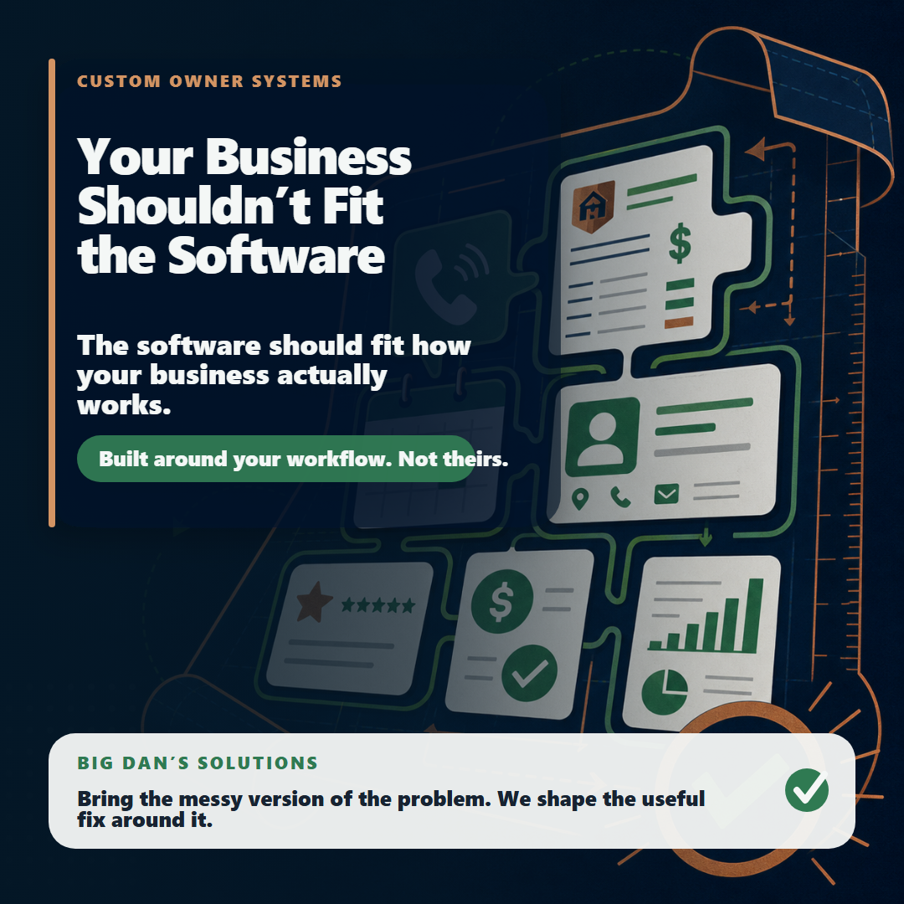

01
Who it is for.
Small businesses where the owner still feels the mess behind the scenes: missed calls, slow quotes, scattered notes, unclear follow-up, clunky software, paperwork, scheduling, or reporting.
Workflow Checkup
We look at how work moves through your business - calls, leads, quotes, jobs, paperwork, customer info, follow-up, scheduling, and tools - then identify the first bottleneck that should be cleaned up.

What It Is
The checkup is a plain-English review of where work starts, where it gets handed off, where customers wait, where information gets lost, and which fix would create the most relief first.
Small businesses where the owner still feels the mess behind the scenes: missed calls, slow quotes, scattered notes, unclear follow-up, clunky software, paperwork, scheduling, or reporting.
A clear first move: what is slowing things down, why it matters, and what should be fixed before spending time on anything bigger.
If there is a good fit, the next step may be website cleanup, Google presence, lead follow-up, scheduling, reporting, automation, a dashboard, or a small internal tool. The workflow decides the fix.
Start Here
Tell me what keeps slowing the business down. A few plain-English details are enough to start the checkup conversation.